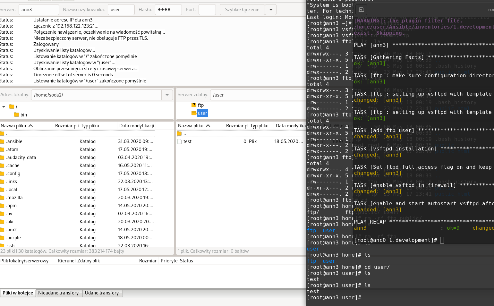

Conversation with 2345422802147713 at nie, 17 maj 2020, 22:16:11 on mateusz.stomski (facebook)
(22:16:10) Michael Grandson:
panie teraz 14dni kwarantany jako ze byles w sosnowcu - zagranica :P
(22:16:40) Mateusz Stomski:
dałem radę się przetransportować ;p
(22:16:47) Michael Grandson:
kurcze wstalem a mysle pojade w gory, jako ze juz pozno bylo to mowie a podjade na skrzczne
(22:17:13) Michael Grandson:
ale jak dojechalem na miejsce zobaczylem tlum ludzi wiecej niz na targu to wrocilem i poszedlem na rower :P
(22:17:21) Mateusz Stomski:
zrobiłem konfigurację FTP za pomocą templejtu i kurła ansible nie umie mi go znaleźć bo szuka w innych katalogach -_- a w google nic nie ma w temacie. tak jakby to działało z palca wszystkim xd
(22:17:45) Mateusz Stomski:
przynajmniej się przejechałeś ;p
(22:17:57) Mateusz Stomski:
ja dzisiaj stawiki i ten trójkąt
(22:17:58) Michael Grandson:
j2 template?
(22:18:01) Mateusz Stomski:
tak
(22:18:19) Michael Grandson:
kurcze nie apmeitam jak sander to mial ale
(22:18:29) Mateusz Stomski:
wszystko by grało. ale ansible szuka tego w /role/tasks/templates a nie w /role/templates
(22:18:49) Mateusz Stomski:
nawet mi defaultsy działają bez zająknięcia xd
(22:18:54) Mateusz Stomski:
a to nie
(22:19:34) Michael Grandson:
holender ma to chyab wszytkow katalogu lab
(22:21:05) Mateusz Stomski:
a ta cała jinja to pic na wodę, dwa lata temu uczyłem się symphony to musiałem opanować twiga który był mega z dupy
(22:21:08) Michael Grandson:
juz ci podsylam
(22:21:16) Michael Grandson:
j2 template file for apache httpd:
file name: https.j2
content:
listen {{ ansible_all_ipv4_addresses }}:443
NameVirtualHost {{ ansible_fqdn }}
<virtualHost {{ ansible_fqdn }}:443>
ServerName {{ ansible_fqdn }
DocumentRoot /var/www/html
SSLEngine on
SSLCertificateFile /etc/httpd/conf.d/ssl/server.crt
SSLCertificateKeyFile /etc/httpd/conf.d/ssl.server.key
</VirtualHost>
(22:21:17) Mateusz Stomski:
a sam używałem i wdrażałem puga w projektach
(22:21:32) Mateusz Stomski:
jinja2 w ansiblu to w sumie tylko 3 znaczniki
(22:21:33) Michael Grandson:
playbook
filename: configure_web.yml
content:
---
- shell:
rpm -q httpd
register: rpm_check
failed_when: rpm_check.rc == 1
- block:
- get_url:
url: "{{ https_url }}"
dest: /etc/httpd/conf.d/
- file:
path: /etc/httpd/conf.d/ssl
state: directory
mode: 0775
- template:
src: https.j2
dest: /etc/httpd.conf.d/ssl.conf
owner: root
group: root
mode: 0755
- unarchive:
src: "{{ ssl_uri }}"
dest: /etc/httpd/conf.d/ssl/
copy: no
notify:
- restart_services
- copy:
content: "{{ ansible_fqdn }} ({{ ansible_default_ipv4.address }}) has been customized by ansible\n"
dest: /var/www/html/index.html
when:
rpm_check.rc == 0
***
(22:22:23) Mateusz Stomski:
no i Michał pytanie
(22:22:30) Michael Grandson:
podaje te sekcje w block
- template:
src: https.j2
dest: /etc/httpd.conf.d/ssl.conf
owner: root
group: root
mode: 0755
(22:22:44) Mateusz Stomski:
gdzie leżą pliki? playbook i ten template? i czy to jest w roli czy nie?
(22:23:01) Michael Grandson:
ma jakis lab5 czy ctam lab
(22:23:12) Mateusz Stomski:
bo ja bez roli i playbook nie leży w tasks... to takie example na google widziałem ;p
(22:23:33) Mateusz Stomski:
i to może działać. ale ja to chce już w roli mieć
(22:23:45) Mateusz Stomski:
ja jak ten template przeniose do tasks to tez działa
(22:24:13) Mateusz Stomski:
a wszystkie example co znajduje w googlach to są takie mega proste. jak cep
(22:24:25) Mateusz Stomski:
cały projekt się składa z 3 plików xd
(22:24:38) Mateusz Stomski:
bez zmiennych, bez ról
(22:24:49) Michael Grandson:
a walsnie zamiast google korzystales z yahoo? google juz na sile wszystko z anagielskiego tlumaczy
(22:24:58) Michael Grandson:
lub ustaw sobie jezyk wyszukiwania angielski
(22:27:54) Michael Grandson:
Roles expect files to be in certain directory names. Roles must include at least one of these directories, however it is perfectly fine to exclude any which are not being used. When in use, each directory must contain a main.yml file, which contains the relevant content:
tasks - contains the main list of tasks to be executed by the role.
handlers - contains handlers, which may be used by this role or even anywhere outside this role.
defaults - default variables for the role (see Using Variables for more information).
vars - other variables for the role (see Using Variables for more information).
files - contains files which can be deployed via this role.
templates - contains templates which can be deployed via this role.
meta - defines some meta data for this role. See below for more details.
(22:28:19) Michael Grandson:
z tego co jest w domumentacji napisane to musisz miec katalog templates
(22:28:31) Mateusz Stomski:
no właśnie mam
(22:28:33) Michael Grandson:
ewentualnie w main/yml zdefiniowac
(22:28:52) Mateusz Stomski:
no i tego nie wiem właśnie bo nigdzie nie znalazłem przykładu jak to ma być zdefiniowane
(22:29:29) Mateusz Stomski:
tak wygląda w playbooku:
(22:29:31) Mateusz Stomski:
- name: setting up vsftpd with template file
template:
src: templates/vsftpd.j2
dest: /etc/vsftpd/vsftpd.conf
owner: "{{ ftp_user }}"
group: "{{ ftp_group }}"
mode: 0600
backup: true
(22:29:49) Mateusz Stomski:
próbowałem i src: templates/vsftpd.j2 i src: vsftpd.j2
(22:30:23) Mateusz Stomski:
fatal: [ann3]: FAILED! => {"changed": false, "msg": "Could not find or access 'vsftpd.j2'\nSearched in:\n\t/home/user/Ansible/inventories/1.development/roles/ftp/tasks/templates/vsftpd.j2\n\t/home/user/Ansible/inventories/1.development/roles/ftp/tasks/vsftpd.j2\n\t/home/user/Ansible/inventories/1.development/roles/ftp/tasks/templates/vsftpd.j2\n\t/home/user/Ansible/inventories/1.development/roles/ftp/tasks/vsftpd.j2 on the Ansible Controller.\nIf you are using a module and expect the file to exist on the remote, see the remote_src option"}
(22:30:34) Mateusz Stomski:
a jak widzisz on szuka tylko w katalogu tasks
(22:31:52) Michael Grandson:
a tak z ciekawosci jakie uprawnienia ma ten template j2?
(22:32:02) Michael Grandson:
rwx
(22:32:14) Mateusz Stomski:
standardowe rw
(22:32:34) Mateusz Stomski:
problemem nie są accesy bo on w ogóle omija katalog /templates
(22:33:09) Mateusz Stomski:
to faktycznie wygląda tak jakby w /templates/main.yml trzeba by dodać jakiś import
(22:34:26) Michael Grandson:
searched in:
/home/user/Ansible/inventories/1.development/roles/ftp/tasks/templates/vsftpd.j2
/home/user/Ansible/inventories/1.development/roles/ftp/tasks/vsftpd.j2
/home/user/Ansible/inventories/1.development/roles/ftp/tasks/templates/vsftpd.j2
/home/user/Ansible/inventories/1.development/roles/ftp/tasks/vsftpd.j2 on the Ansible Controller.
If you are using a module and expect the file to exist on the remote, see the remote_src option"}
(22:34:38) Michael Grandson:
on ci przelatuje teraz te 4 sciezki
(22:35:55) Michael Grandson:
czytjac te doc to ja rozumiem tak jak nie amsz utworzonych tych katalogowó co sa standardem to musisz plik main zrobic i w nim definowac sciezki plików
(22:36:30) Michael Grandson:
i to masz chyab rpzykalda tego main
(22:36:31) Michael Grandson:
# roles/example/tasks/main.yml
- name: added in 2.4, previously you used 'include'
import_tasks: redhat.yml
when: ansible_facts['os_family']|lower == 'redhat'
(22:36:54) Mateusz Stomski:
no tak tylko tutaj masz przykład dla playbooków a nie dla templatów :)
(22:37:17) Mateusz Stomski:
może na galaxy zobacze jak ludzie to robią
(22:39:09) Mateusz Stomski:
ta dokumentacja mi się strasznie nie podoba
(22:39:09) Michael Grandson:
roli jeszcze z holenderm nie rpzerabialem ale z tego co widze w tym doku
to mzoe do tego main sprobowac wrzucic:
name: Template a file to /etc/files.conf
template:
src: /mytemplates/foo.j2
(22:39:09) Mateusz Stomski:
ta dokumentacja mi się strasznie nie podoba
(22:40:40) Michael Grandson:
to widzialem mema: man date na linuxie po czym przyklad ta ze stackoverflow :P
(22:40:52) Mateusz Stomski:
xd
(22:41:08) Mateusz Stomski:
zrobiłem tak jak podałeś tylko poprawiłem pod siebie i dalej szuka w tasks
(22:41:47) Mateusz Stomski:
jak patrze po galaxy to mało kto z tego korzysta chyba w taki sposób
(22:42:17) Mateusz Stomski:
https://github.com/geerlingguy/ansible-role-nfs/tree/master/templates
(22:45:26) Michael Grandson:
z docka
This designates the following behaviors, for each role ‘x’:
Any copy, script, template or include tasks (in the role) can reference files in roles/x/{files,templates,tasks}/ (dir depends on task) without having to path them relatively or absolutely.
(22:46:15) Michael Grandson:
czyli co jak to u Ciebie mialo by byc roles/nfs/templates/[dirdla tasku]/nazwaTempaltki.j2
(22:48:08) Mateusz Stomski:
tego co wkleiłes to właśnie nie rozumiem. widziałem to w manualu oficjalnym.
(22:48:29) Mateusz Stomski:
ale... śmiesznie. jak wrzuce ten task do main.yml to działa
(22:48:41) Mateusz Stomski:
a jak jest w innym tasku niż /tasks/main.yml
(22:48:44) Mateusz Stomski:
to nie działa
(22:50:12) Michael Grandson:
tj jak masz /tasks/[tu nazwe towjego] to niedziala?
(22:50:55) Michael Grandson:
Roles expect files to be in certain directory names.
tasks - contains the main list of tasks to be executed by the role.
handlers - contains handlers, which may be used by this role or even anywhere outside this role.
defaults - default variables for the role (see Using Variables for more information).
vars - other variables for the role (see Using Variables for more information).
files - contains files which can be deployed via this role.
templates - contains templates which can be deployed via this role.
meta - defines some meta data for this role. See below for more details.
(22:51:44) Michael Grandson:
ja to oruzmiem ze jest troche jak struktua php/htmla masz plik inde i pozniej drzewo katalogów co musi byc zdefiniowane
(22:54:16) Mateusz Stomski:
no jak mam swoją nazwę to nie działa. a jak role/tasks/main.yml
(22:54:21) Mateusz Stomski:
to jest ok
(22:55:03) Mateusz Stomski:
jak zdążę jeszcze dzisiaj zrobić usuwanie ftpa i będzie to działać wrzucę całość na gita to sobie zobaczysz jak będziesz chciał
(22:55:42) Mateusz Stomski:
mam tam kilka rzeczy. filtr, defaults, templata :) zmiany plików tekstowych
(22:56:27) Michael Grandson:
a patrz na to co jest w doku "When in use, each directory must contain a main.yml "
(22:56:39) Michael Grandson:
ten main.yml jest obowiazkowy
(22:57:57) Michael Grandson:
czyli co bys muail miec u sienie main
tasks/main.yml
w ktorym masz
- name: added in 2.4, previously you used 'include'
import_tasks: [sciezka do twojego].yml
(22:58:20) Mateusz Stomski:
mam main i w tasks i w template
(22:58:44) Mateusz Stomski:
a import tasks... dla mnie kosmos nie używam ;p
(22:59:22) Mateusz Stomski:
inaczej - nie mam potrzeby. każdy mój playbook jest samowystarczalny i nie ma zależności
(23:00:06) Mateusz Stomski:
jak napiszę parę tych ról i będzię to całe fajnie działać to będę poprawiał. refaktoryzował ;)
(23:00:24) Mateusz Stomski:
i tak nie robię tego do końca dobrze bo powinienem robić zmienne w zależności od systemu
(23:00:37) Mateusz Stomski:
np w centos apache nazywa się httpd
(23:00:43) Mateusz Stomski:
w debianie po prostu apache
(23:01:12) Michael Grandson:
a cos z innej eczki, tez mi zaczelo huczeć w aucie tak jak Tobie. wymiana łozyska i spokoj, przy 180 i zakretach jest cisza :D
(23:01:19) Mateusz Stomski:
jak puścisz playbook z modułem package to zaskoczą oba. ale paczka httpd będzie tylko na jednym
(23:01:51) Mateusz Stomski:
ja łożysko też musiałem wymienić wtedy ale nie wiem czy to było to
(23:02:26) Michael Grandson:
u mnie pomoglo, jak mozna wieidzec ile za to Cie skasowali
(23:02:57) Mateusz Stomski:
niestety ci nie powiem. to było dawno a przy okazji robili kilka rzeczy chyba
(23:03:09) Mateusz Stomski:
więc nie dojdę do ceny
(23:03:16) Mateusz Stomski:
ale mechanicy tani nie są ;\
(23:03:52) Michael Grandson:
spoko, ja tam u siebe jestem wstanie poeksperymentowac z czesciami jako ze sam to wymieniam
(23:04:02) Michael Grandson:
na razie zle nie wychodze :P
(00:49:23) Mateusz Stomski:
ftp zrobiony i jest dostępne z mojej fedory. do teraz siedziałem i to naprawiałem xd
(00:49:27) Mateusz Stomski:

(00:52:27)
Konto zostało rozłączone i użytkownik nie jest już obecny w tej konferencji. Po nawiązaniu połączenia nastąpi ponowne dołączenie.